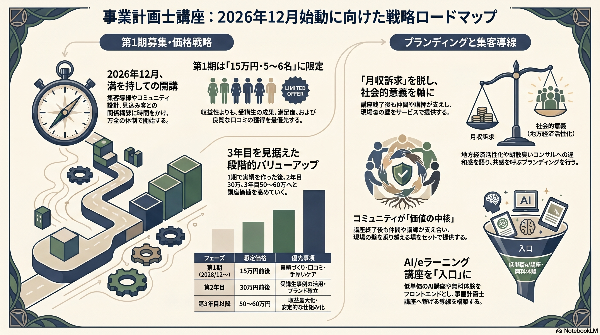

本日の要点
本日のミーティングは、前半で事業計画士講座の集客戦略、価格設計、ライトアップ契約状況を確認し、後半で講座の訴求設計、渡邉社長が事業計画士に込める原点、AI/eラーニング講座の販売導線について議論しました。
第1期は12月開始を現実線に
夏〜秋開始ではなく、関係性づくりと導線整備に時間をかける。
価格は15万円前後から
第1期は収益最大化より、成果・事例・口コミ品質を重視する。
月収訴求に寄せすぎない
情報商材化を避け、思想・経歴・地方経済活性化の文脈で見せる。
コミュニティが講座価値になる
受講後に壁へぶつかった時、支え合える場を設計する。
AI/eラーニング講座を別導線に
無料セミナーや無料体験を入口にし、eラーニング講座へつなげる。
次回は6月22日
第1期募集設計とAI講座導線を再整理して確認する。
ACTION ITEMS
| 担当 | 内容 | 補足 |
|---|---|---|
| 高橋 | 第2巻の最終チェック版を渡邉社長へ共有する | 準備でき次第 |
| 高橋 | 事業計画士講座の集客設計を再整理する | LP、無料診断、メルマガ、Facebook、LINE、コミュニティ導線を含める |
| 高橋 | 講座の「刺さるワンフレーズ」を検討する | 月収訴求に寄せすぎず、思想・社会的意義を軸にする |
| 高橋・渡邉 | 第1期の開始時期・価格・募集人数を再設計する | 早くても12月開始、15万円前後、5〜6名程度 |
| 渡邉 | eラーニング講座の無料体験申込URLを高橋へ送付する | リログループ向けに提供している講座の導線を確認 |
| 高橋 | AI/eラーニング講座の販売導線を検討する | 事業計画士講座とは別の入口商品として整理 |
| 高橋 | 次回MTGを6月22日（月）11:00で設定する | 口頭合意済み |
事業計画士講座の集客戦略
志師塾・井原さんからは、講座コンテンツ自体は良い一方で、コロナ後の講座ビジネスは集客が非常に難しくなっていると助言がありました。普通に募集しても人は集まりにくく、関係性づくり、コピーづくり、コミュニティ設計を時間をかけて行う必要があります。
今回確認した前提
- 1人集客するための集客コストを考える必要がある。
- 講座価格、開始時期、募集人数を現実線に寄せる。
- 講座を一言で説明できるコピーが必要。
- メルマガ、本、Facebook、LINE、コミュニティなど、関係性を作る導線が必要。
| 項目 | 今回の整理 |
|---|---|
| 開始時期 | 早くても2026年12月 |
| 第1期価格 | 15万円前後 |
| 第1期人数 | 5〜6名程度 |
| 2年目価格 | 30万円程度も視野 |
| 3年目以降 | 50〜60万円程度も視野 |
| 優先事項 | 収益より成果・ケア・口コミリスク管理 |
第1期は講座品質と受講生事例づくりを優先します。講座ビジネスは口コミが怖い商材であり、初期の満足度と成果がその後の展開を左右します。
訴求設計と講座の見せ方
後半では、高橋から「月収」や収益面を前面に出しすぎると、情報商材のように見えるリスクがあると共有しました。渡邉社長の講座は、単に稼ぐための講座ではなく、経営者を支えられる人材を育てる講座として見せるべきです。
講座の原点
- コンサルタント業界には胡散臭さがあり、経営者からも不満を聞くことが多い。
- 経営者の話を丁寧に聞き、本人に火をつけられる支援者が必要。
- 東京だけでなく、地方の経済を支える人材を育てたい。
- 講座後に壁へぶつかった時、仲間や講師が支え合えるコミュニティが価値になる。
AI/eラーニング講座の販売導線
事業計画士講座とは別に、渡邉社長が展開しているAI/eラーニング講座を入口商品として扱う可能性を検討しました。
- 電通グループが関わってサイト制作を進めており、6月15日頃に完成予定。
- 大学生向けだけでなく、企業向けにも展開したい構想がある。
- 日本企業のAI活用が遅れているという問題意識が背景にある。
- AI関連セミナーや無料体験を入口にして、eラーニング講座へつなげる導線が考えられる。
- リログループの福利厚生サービス向けに提供している講座があり、その無料体験申込URLを高橋に共有する。
インフォグラフィック・スライド
事業計画士講座 戦略ロードマップ
第1期立ち上げに向けた全体像を確認するためのインフォグラフィック。
PNGを開く{kind=link}
Strategic Blueprint
講座戦略の骨子をまとめたPDFスライド。
PDFを開く